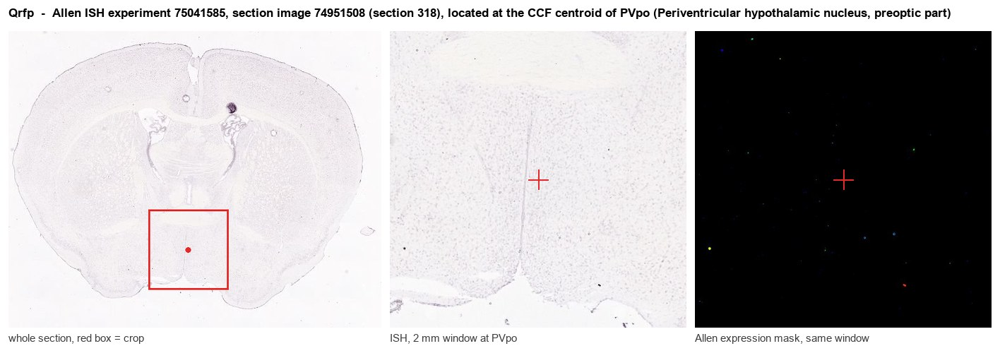
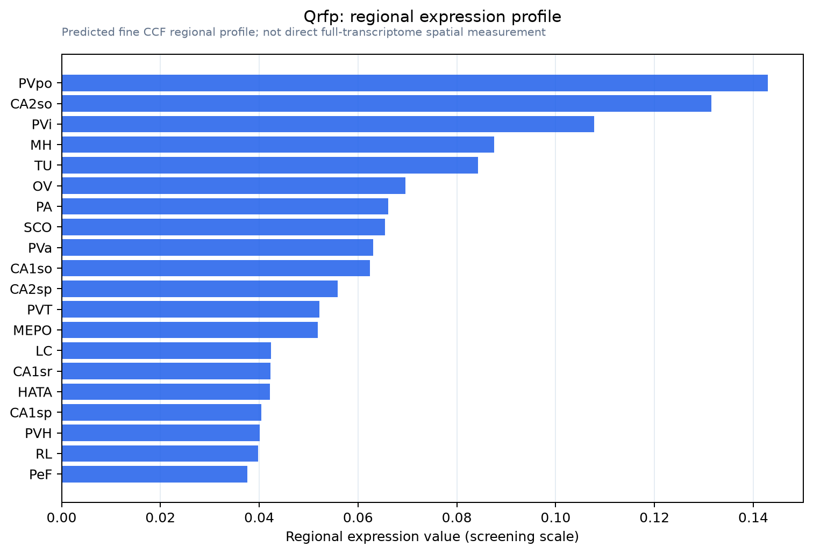

Qrfp
Spatial tier: RESTRICTED · Class: OTHER · Top region: PVpo (Periventricular hypothalamic nucleus, preoptic part) · Positive regions: 20/554
49.1Discovery Score
36.1Targetability Score
CEvidence grade C
What this means: Qrfp: fine CCF profile is restricted toward PVpo (top regions: PVpo, CA2so, PVi, MH, TU; 20 positive regions); direct spatial validation is still required.
Function in PVpo: evidence, prediction, innovation
- Gene function
- Qrfp encodes the pyroglutamylated RFamide peptide precursor, processed into the 26-amino-acid 26RFa and the longer 43RFa. These peptides act on the Gq-coupled receptor GPR103 (QRFPR) to raise intracellular calcium. Centrally, QRFP increases food intake and locomotor activity and relays peripheral insulin signalling into the brain to shape glucose homeostasis.
- Region function
- The preoptic part of the periventricular hypothalamic nucleus sits along the third ventricle in the anterior hypothalamus and contributes to thermoregulation, torpor, sleep and neuroendocrine control.
- Published in this region
- direct Direct. Qrfp-expressing neurons of the anterior hypothalamic periventricular and medial preoptic region are the 'Q neurons' whose activation drives a long-lasting hypothermic, hypometabolic hibernation-like state in mice; Takahashi 2022 induced this state optogenetically with a modified human Opsin4 in Qrfp-targeted neurons, and Ono 2026 refined the iCre-based induction. Machado 2022 independently identified preoptic populations that set body temperature, and El Mehdi 2022 and Cook 2022 define the metabolic and feeding actions of the QRFP/GPR103 system.
- Predicted function
- Prediction: within PVpo the peptide itself, as distinct from the neurons that make it, should act as a slow excitatory modulator on GPR103-expressing preoptic and downstream thermoregulatory targets, lowering the defended body-temperature set point while raising feeding drive in the recovery phase. Deleting Qrfp specifically from preoptic neurons, rather than silencing the neurons, is predicted to weaken and shorten the induced torpor-like bout without abolishing it, because these cells also release fast transmitters; a central GPR103 antagonist should do the same.
- Innovation
- ★★☆☆☆ 2/5 Preoptic Qrfp neurons are already a high-profile torpor substrate, though the peptide's own contribution, as opposed to the neurons', remains largely untested.
- Tools
- Qrfp-iCre and Qrfp-Cre knock-in mice used in the hibernation-like-state work; Qrfp and Gpr103 knockout mice; 26RFa and 43RFa peptides as agonists; preoptic co-targeting with Vgat-IRES-Cre; anti-26RFa antibodies.
- References
Direct evidence located at the region

Allen ISH experiment 75041585, section image 74951508 (section 318): the section that contains the CCF centroid of Periventricular hypothalamic nucleus, preoptic part according to the Allen image-to-atlas alignment (reference_to_image), with a 2 mm window around that point. Left: whole section, red box = window. Middle: ISH signal. Right: Allen's expression-mask view of the same window. open this image in the Allen viewer
Look it up yourself: Allen Mouse Brain ISH for QrfpAllen reference atlas: PVpo (structure 133)ABC Atlas MERFISH viewer(in the ABC Atlas choose dataset MERFISH-C57BL6J-638850-CCF, colour cells by gene "Qrfp" or by parcellation_substructure "PVpo")All genes confined to PVpo + 3-D brain
Direct spatial evidence
MERFISH REGION LOCATOR

Regional expression figure

Predicted WMB × fine-CCF profile; not direct full-transcriptome spatial measurement.
Spatial profile
Evidence and specificity
- Evidence status
- PREDICTED_FINE
- Direct sources
- None; predicted localization only
- Exclusive threshold
- 12 positive regions out of 554
- Spatial specificity
- 0.372
- Top-region fraction
- 0.077
- Filter status
- PASS
Interpretation limits
- Cell-type-to-region projection is imputed expression, not direct spatial measurement.
- Adult reference atlases do not establish stability across age, sex, strain, state, or disease.
- Transcript abundance does not guarantee protein abundance or genetic-tool performance.